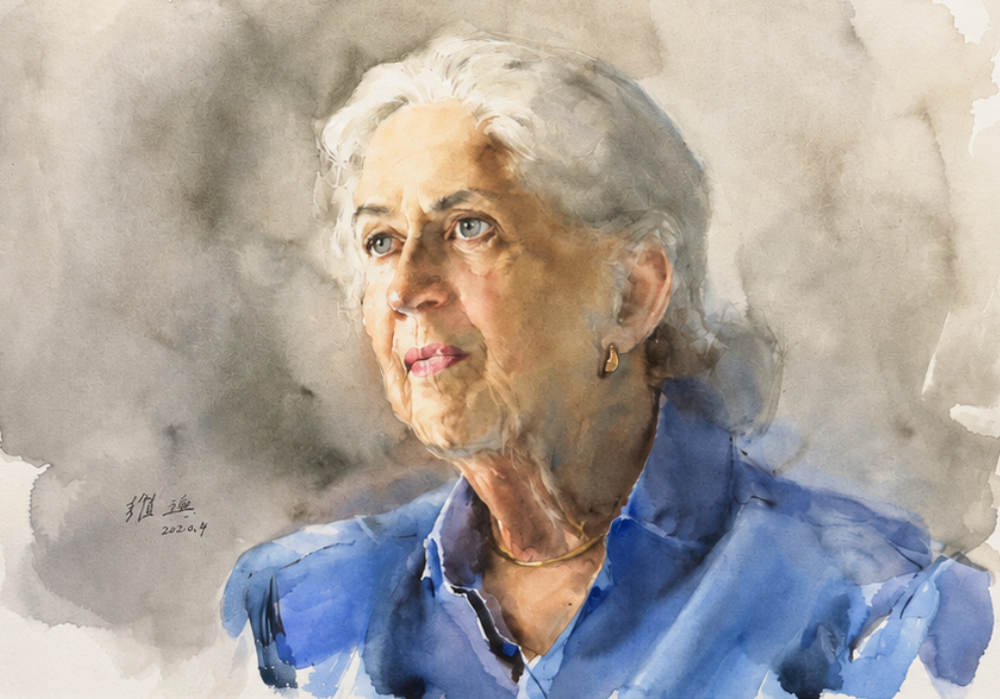

AMBLESIDE ARTIST
Guan Weixing
Watercolor

FEATURED WORK
Lexington Lady
Guan Weixing
WATERCOLOR
A portrait demonstrating Weixing's remarkable command of watercolor, atmosphere and the expressive character of the human figure.
THE ARTIST
Mastery of
watercolor.
Guan Weixing was born in Dunhua County, Jilin Province, China, in 1940. He studied at the Luxun Fine Arts Academy, where, while still a first-year student, he was selected in 1960 to study in the oil painting training class of Romanian professor Eugen Popa. He graduated in 1962.
Over the decades that followed, Guan developed an international reputation for extraordinary figurative watercolor painting. His work has been exhibited and collected throughout China and internationally, including exhibitions in the United States, Japan and France.
His paintings are distinguished by their remarkable command of the human figure, sensitive characterization, atmospheric color and seemingly effortless handling of watercolor.
Works including First Snow, Friends, Holy Mother in the World, Autumn Fun, Youth and Villagers Viewing Opera helped establish Guan as an internationally recognized watercolorist.
ON HIS WORK
“Every picture is a lyric.”
— Leslie Worth
GUAN WEIXING & AMBLESIDE
An enduring
relationship.
In 2005, Guan Weixing traveled to the United States for his first American solo exhibition at Ambleside Gallery.
The exhibition introduced American audiences to both his finished paintings and his remarkable watercolor process, beginning an important relationship between Guan and Ambleside.
During this period, his painting Aged Man received the Former President Award at the 85th National Watercolor Exhibition, and Guan was subsequently honored with membership in the National Watercolor Society.
Guan returned to the United States in 2007 for exhibitions in New York, Houston and Greensboro.
SELECTED WORKS
The Collection
COLLECT